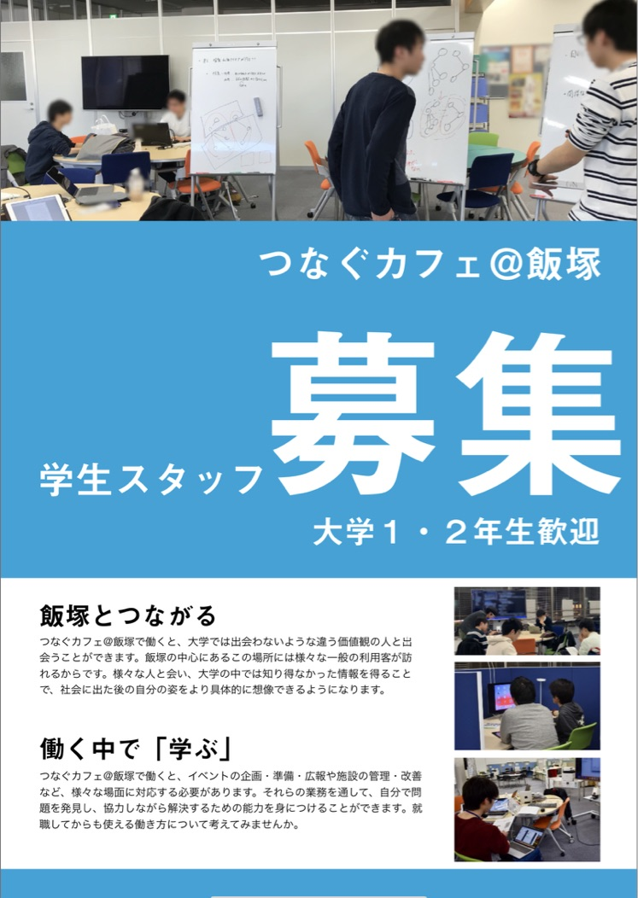
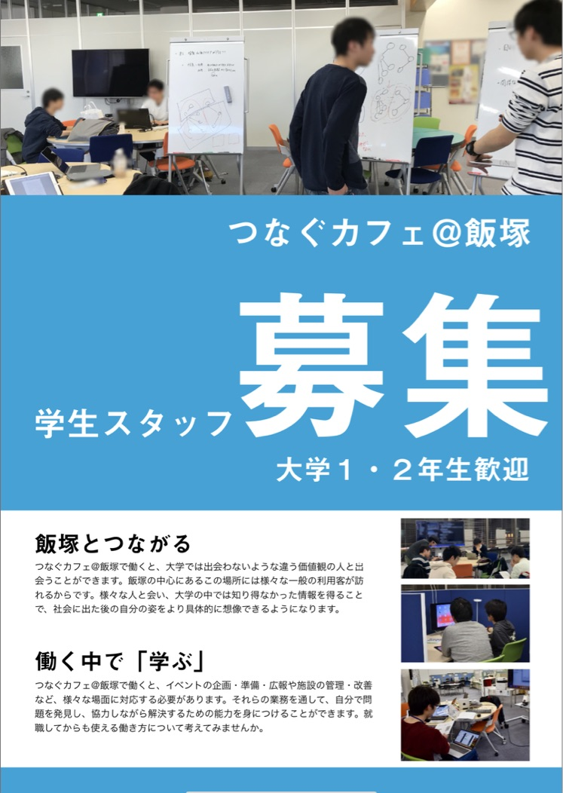
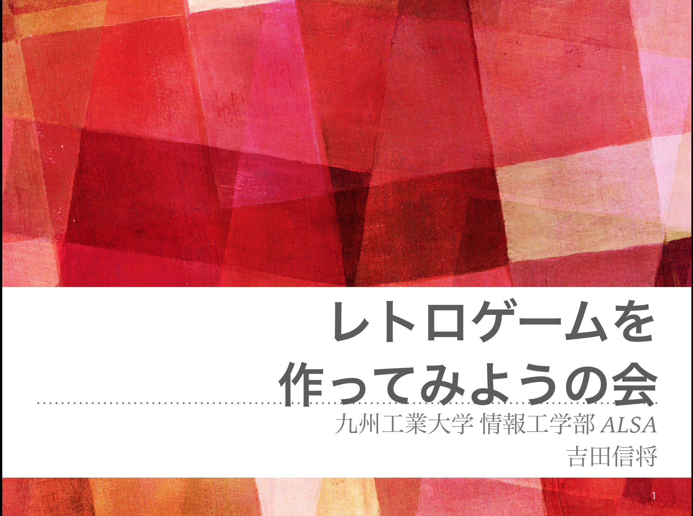

まず、問題を整理して、誰に何を伝えるのかを決める
人に見せるためのモノを作るときは、伝えたいことを整理することや、それがどのような人にとって嬉しいの情報なのか考えることに、一番リソースを割くようにしています。
例えば、アルバイト先で業務の一環として、イベントの企画・運営や、告知のためのフライヤーの制作をすることがありました。
イベントのためのスライドを作る時でも、告知のためのフライヤーを作る時でも、人と話をしたり手を動かしたりする中で伝えたいことを整理し、それが誰にとって嬉しい情報なのかを考えて、次にそれらを達成できるように制作物の完成度をあげるように心がけています。
 


制作したフライヤーの一覧はこちら >
開催したイベントの一覧はこちら >
知らない分野も積極的に学ぶ
問題を解決するために必要になれば、新しいことにも積極的に挑戦するようにしています。
趣味でゲームを作ることがあります。
昔はディープラーニングや競技プログラミングに興味を持ち、色々と試して遊んでいました。
そのころの経験から生まれた計算機科学への慣れは、ゲーム作りはもちろんwebサイトの実装などにも役立っているかと思います。

制作したプログラミングに関するもの一覧はこちら >
新しいことに挑戦するための「学び」そのものについて考える
アルバイト先で業務の一環として、大学からの学びについて考え直すイベントを何度も開催しています。

開催したイベントの一覧はこちら >